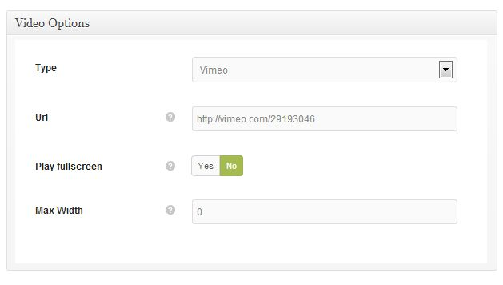
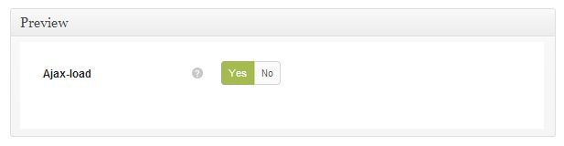
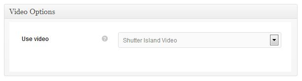
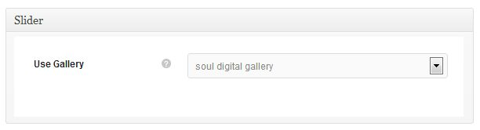
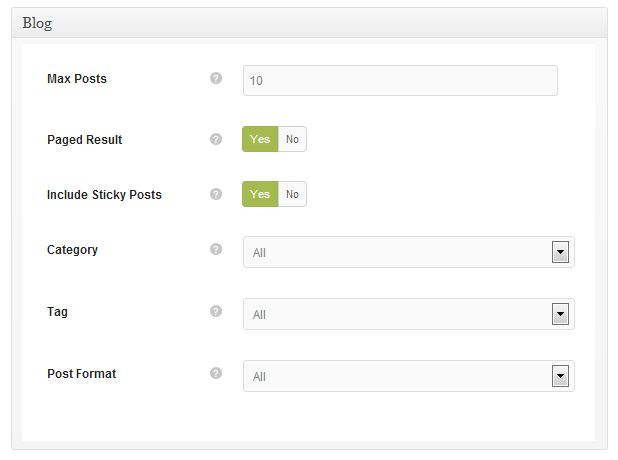
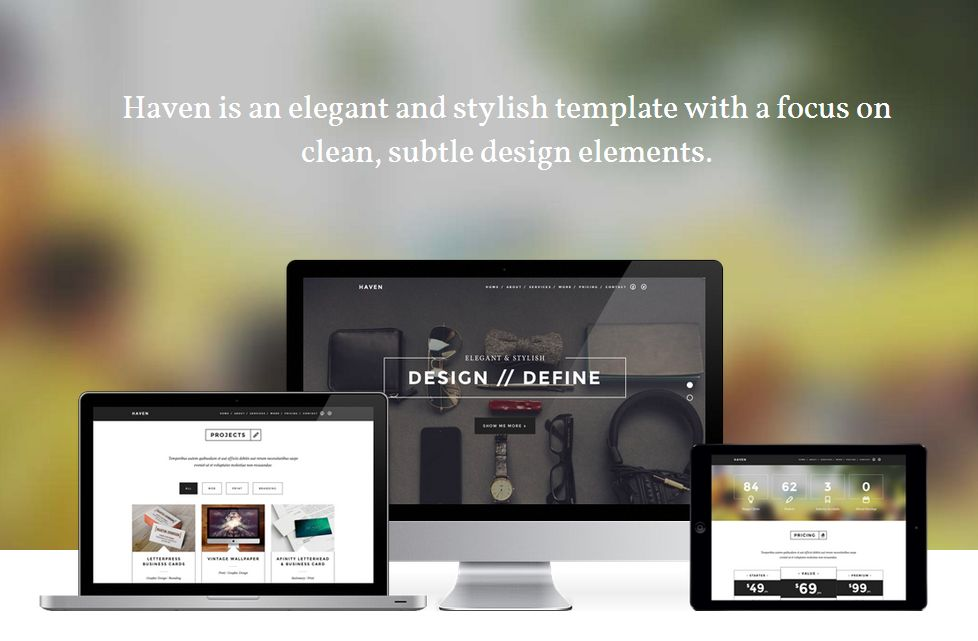

1 Getting Startedtop
1.1 Download Package Contents
Once you have downloaded and unzipped the haven package you will be faced with a list of files and folders. An explanation of these is as follows. Any item not mentioned here should be ignored for the moment.
Folders
| haven.theme.zip | This is a zip archive of the theme. This is used for installation method 2 (see below) | |
| docs | This is the help documentation. To view simply open index.html found inside this folder | |
1.2 Installing Your Theme
Once you have downloaded the haven package from Themeforest.net, there are 2 ways of installing this theme. These are as follows:
METHOD 1
- Unzip the download package using Winzip or equivalent.
- You will see another zip archive file inside called haven.theme.zip, unzip this file also using Winzip or equivalent software and using an FTP client (eg. Filezilla), upload its contents to your WordPress installation. You will need to place the folder into the following location: wp-content/themes
- Now inside your WordPress admin area, go to Appearance > Themes and there you will see the haven Theme.
- Click Activate to activate the theme. If you do not see the theme in this screen, you have done something incorrectly. Review the last few steps again.
METHOD 2
- Unzip the haven download package. Once unzipped you will see a zip file named haven.theme.zip, this is a compressed version of the theme.
- Now inside your Wordpress admin area, go to Appearance > Themes > Install Themes (tab) > Upload
- Click browse and locate this haven.theme.zip file and upload it
- Now you will see the haven theme in the Manage Themes tab.
- Click Activate to activate the theme. If you do not see the theme in this screen, you have done something incorrectly. Review the last few steps again.
Installation Video
Here is a link to an video showing the installation of the theme and the importing of demo content:
INSTALLATION VIDEOCongratulations you have now successfully installed the haven Theme
1.3 Theme Installation Errors
Do not upload the Themeforest download package directly to your Wordpress site, because this will lead to errors. Make sure to Unzip this package and inside you will find the theme zip archive: haven.theme.zip. This is what you will need to upload to your Wordpress installation
If you upload / Install the haven theme and you get one of the following errors, then you have forgotten to unzip the download package.
- This theme is invalid
- This theme is missing a style.css
2 Theme Setuptop
Before you start using the haven theme, a few setup steps are required. This section will walk you through these steps.
2.1 Importing Demo Content
Some buyers like to install their theme and have it look exactly like the Themeforest preview site. If this is something you would like to do, then follow the steps in this section. This step is optional so feel free to skip it. The subsequent sections will provide all the instructions you need to insert your own content manually.
The dummy content inserted in this step will not contain the beautiful images seen in the Themeforest.net demo. These images cannot be included because they are commercial images, which we have purchased for theme demonstration only and we do not have a redistribution license for these assets.
To Import Demo ContentMake sure to install and activate the haven theme before importing any demo content.
![[Import%20Demo%20Content.png]](shots/Import Demo Content.png)
- Install and activate the haven theme. (See section above)
- Go to the haven theme options Appearance > Theme Options
- The General tab should be open by default, but if not click it to show the general options.
- The very first section in the General is the demo Content import section.
- Click the large green Import Demo Content button once only.
- The theme will now import our demo content into you site. A progress bar will inform you of the import processes progress.
- This importer will basically import posts, pages, comments, custom fields, categories, tags, sidebars, widgets, menus and all configuration from our preview content export file.
Please note that dummy images will be used instead of the premium image assets we have used in our online preview.
Alert 2 If you already have content in your site, you will be asked to confirm the import, but if your site is a fresh installation of Wordpress, there will be no confirmation request. Importing demo content will not overwrite existing content such as posts or pages, but it will replace all sidebar and widget configuration. So please be aware of this before you decide to do this process.
3 Theme Structure - How It Workstop
The haven theme is essentially a single page theme with a separate blog section. The single page layout is made up of a master page and multiple subpages. These sub pages make up the sub sections of the single page layout, sections like services, portfolio, clients etc. Sub sections are basically accessed via main navigation and they will appear in whatever order you choose. To construct this site structure you need to follow these steps:
- Create a Master Page using the "Home" or "Header" page template. (See "Creating Pages" section for more info.)
- Next create a separate page for each of the sub sections you would like to insert on the one page layout.
- In the "Page Attributes" box on the right hand side of the "Edit Page" admin you will assign the master page you created in step 1 as the parent of each of these sub pages. To do this simply select the "Home" or "Header" page from the dropdown list available under Parent field.
- Next you will need to specify the order in which these sub pages will appear. This can be done in the same box using the "Order" field. Enter 1 or 2 or 3... etc. in here for each of your desired sub pages. This will dictate the sequence in which the sections appear in the one page setup, when scrolling down.
- Next you just need to tell WordPress to use your master page as the opening page of your website, to do this go to "Settings > Reading" in the WP admin and set your master page as the "Front Page" (Static) in the option entitled "Front Page Displays".
- Now your website will open with your master page and if you scroll down or use the main menu, you will see all of your sub pages in the order which you set in step 4 above. These new sections will be displayed without a full page reload.
The Blog page (plus optionally any other pages you would like) is an exception to this structure, it must be attached as a separate page only and may not be a child or sub-page of the homepage section. This means that a reload is needed when switching to the blog section. The Blog section is created like a normal page (Using the blog page template) and is simply linked via the main menu. (See the "Menu" section for more info about this.
4 Retina Supporttop
The haven theme contains optional support for devices with a retina display. This support may be enabled/disabled via the theme options ( Appearance>Theme Options>Advanced Tab>Retina Support> Yes/No).
What retina support really means is that the theme will serve hi-res version of content images to decide which have a retina display. This is done automatically for all content used in the theme except for one place; The site logo.
Creating a Retina Site Logo
If retain support is enabled, a high resolution version of the site logo is required. The theme will not automatically create this, it must be done manually. See the instructions below:
- Using image editing software, you will need to create a version of your logo image which is 2 times the size of your original logo. For example is your original logo is 100x50px, the retina logo will need to be 200x100px.
- When creating this retina logo, there is a rule about how the retina logo has to be named. The file name must be exactly the same as the original image but with a suffix of @2x, added just before the file type.
- For example, say your original image is called logo.jpg, therefore the retina image file name would be logo@2x.jpg.
- Upload both the normal logo image and the 2x logo image at the same time to your WP theme insert the original logo image into the logo option in the theme options and the theme will automatically take care of the rest.
5 Custom Thumb Croppingtop
![[thumbnail.crop.png]](shots/thumbnail.crop.png)
The haven theme contains a custom thumbnail cropping feature. This feature is most useful if you want to control how your large images are cropped when they are for example shown in your portfolio grid. With this feature you can control exactly how the thumbnails are created from your larger images.
To use this feature go to:
Media > Library in the main WordPress menu. Now select any image from the library, an image used in your projects would be most suitable. On the main attachment page, scroll down until you see the dialog box entitled: "Thumbnails". To define a custom crop for a thumbnail, do the following:
- This dialog will contain all of the thumbnail version of this attachment which have been auto-generated by the theme for use in those areas you have inserted this image. If this image features in many areas of the theme, or has done at some stage, but was replaced, this dialog may contain numerous thumbnails.
- Find the thumbnail which corresponds with the size of the thumbnail in your portfolio page (which you wish to re-crop). You may need to check the size of that image in your portfolio grid page. You can do this with an element inspector which is built into most modern browsers. Use it by right clicking once you are hovering the image, then select "Inspect Element" from the context menu. Now you should be able to find the image size in the panels which appear.
- Once you have found the thumb you are looking for, click it in the dialog. This will open the thumb cropping control, hiding all other thumbs in the process.
- With your mouse you can now resize and reposition the cropping frame in the window on the left. Once the position has changed you will see a preview of the resulting thumbnail in the window on the right.
- When you have found a suitable crop for this thumbnail, click the "Save" button. The crop control will close and the other thumbs will reappear.
- Now refresh your portfolio grid page to view the updated thumbnail. Remember to clear your browser cache, otherwise the updated thumbnail may not appear.
Once thumb cropping has been altered, the browser cache should be cleared before viewing the page which contains the updated thumbnail.
6 Creating Poststop
The haven theme contains 3 different post formats - Standard, Video and Gallery.
6.1 Custom Metaboxes
haven supports several post formats, some of them like
Video or
Gallery require additional configuration parameters which can be set in the Metabox Area, under the post/page content editor. Each time a Post Format is selected, the page updates and only the Metaboxes relevant to the current selections will be shown.
6.2 Post Format: Standard
This format accepts an optional featured image. To insert this featured image do the following:
- In the Featured Image box, click Set featured Image
- This will open the WP media loader. Select the image you wish to use for the featured image. The resolution should be large, minimum of 1000px wide and the pixelentity framework will auto-generate the size required for the post. ( The image should be optimized for web and devices and should have a file size generally less that 300kb. The smaller the file size the better, as long as the image quality is not compromised. )
- Once the image is loaded ensure the original size is selected and click the Set as Featured Image button.
- Close the media uploader window and publish your post.
6.3 Post Format: Video
This format accepts a custom video post type as its media content. To insert this video do the following:
- Scroll down the page to the Video Options Metabox. There you will find a drop menu containing the list of all the custom video post types which have been created.
- Select the video you wish to feature in this post.
- You can also add a featured image to this post. If one is added it will become the cover image for the video item. If no featured image is entered, the video item will attempt to load its default cover image generated by YouTube or Vimeo, depending on which service you are using.
- Now publish the post.
It should be noted that if you are using the auto cover image fetching method. The theme will only be able to fetch this image is the original video uploader has permitted it. This is usually permitted by default except for videos marked "private". If the video is private, no image will be loaded.
In order for a video to appear in the list, it first needs to be created. See the section on Creating A Video for more information.
6.4 Post Format: Gallery
This format accepts a custom gallery post type as its media content. To insert this gallery do the following:
- Scroll down the page to the Gallery box. There you will find a drop menu containing the list of all the custom gallery post types which have been created.
- Select the gallery you wish to feature in this post.
- Underneath the list of galleries you can specify the width and height of the desired gallery. These values may mean that your images will be cropped in order to achieve the entered dimensions. The extend of the cropping depends on the image's original aspect ratio. To avoid cropping of the images leave these fields blank and the gallery will be sized to fit its content / container.
In order for a gallery to appear in the list, it first needs to be created. See the section on Creating A Gallery for more information.
In this theme all gallery posts will display their content as a slider.
7 Creating a Gallerytop
The haven theme features a Gallery custom post type. This can be found in the main WP admin menu
Galleries. All gallery type posts and portfolio items will need to have their gallery content created first using this custom post type. Once it has been created here it will be available to be inserted into those areas.
7.1 Direct Upload Gallery
This type of gallery is most suited for when the images you want to display are not already uploaded to your Wordpress installation, it will present you with a big "Drop Files Here" area into which you can just drag and drop images from your hard drive. The gallery will take care of everything and, once the upload process is done, you can just save/publish. The image order can be manually altered by dragging thumbs to suit your needs.
To create a Direct Upload Gallery do the following:
- Select the Galleries item in the main admin menu & select "Add New".
- In the Gallerybox, select "Direct upload".
- Drag and drop your images into the Upload Gallery Images section's drop zone with the dashed outline.
- These images will now load and appear below the drop zone in the Gallery Content area as thumbnails.
- You may drag these thumbnails to reorganize the sequence of images if this is important.
- You may also add an optional featured image to the gallery post. This will be used as the cover for the gallery post in certain configurations.
- Now click Publish to publish this gallery post. This type of post is mostly used to provide content for another post or portfolio project. The post may also be viewed in it's own page however by clicking the View Post button.
7.2 Gallery Image Display Options
The haven theme contains one single display option - Slider.
- Slider: The content of the gallery will be displayed as slider. There are no additional options for this mode.
7.3 Media Tags
The WordPress media library doesn't allow you to categorize attachments/images in any way besides the upload date. For this reason, in our framework, we have introduced a feature called "Media Tags". Media Tags work exactly like regular "Tags" do for posts: each image can be assigned one or more tags which can then be used to group similar/related images.The media library admin page has been expanded to allow easy media tags management and image filter by tag.
7.4 Media Tags Gallery
When Wordpress media library is already filled with some images, you can categorize them by using media tags. Once you have created one or more media tags, you can use them to create a gallery. Unlike the direct upload case, the gallery will now show a list of all existing media tags: by selecting one (or more) tag from the list (and clicking the refresh button), all the images assigned to those tag will be automatically added to the gallery. Since the same tags can be used in multiple galleries, you don't need to upload the same image multiple times in order for it to appear in different places. Whenever you assign additional images to a media tag, every galleries making use of these tags will also update its content automatically.
See a video of this process in action:
MEDIA TAGS VIDEO
To create a Media Tags Gallery do the following:
- Select the Galleries item in the main admin menu & select "Add New"
- In the Gallery Optionsbox select "Media tags (Any)" or "Media Tags (All)". For an explanation of media tags see the Media Tags section above.
- Any will includes all the images matching at least one of the selected media tags.
- All will include all the images matching all the selected media tags.
- Select one or more Media Tags from the list
- Click Refresh button
- These images will now load and appear below the drop zone in the Gallery Content area as thumbnails.
- You may drag these thumbnails to reorganize the sequence of images in the Gallery if this is important.
- You may also add an optional featured image to the gallery post. This will be used as the cover for the gallery post in certain configurations.
- Now click Publish to publish this gallery post. This post will not appear in your website. This type of post is only used to provide content for another post or portfolio project. The post may be viewed in it's own page however by clicking the View Post button.
8 Creating a Videotop
The haven theme features a video custom post type. This can be found in the main WP admin menu
Videos. All video type posts and portfolio items will need to have their video content created first using this custom post type. Once it has been created here it will be available to be inserted into those areas.

To create a video custom post do the following:
- Select the Videos item in the main admin menu & select "Add New"
- In the Video Optionsbox select what type of video you would like to create.The options are Youtube and Vimeo
- In both video types, you just need to insert the url of the online video into the Video URL field.
- Select whether the video will play fullscreen using the "Play Fullscreen" option.
- Set the max-width of the video when it is played in fullscreen mode.
- Finally, click Publish to publish your video custom post type. This post will not immediately appear in your website. This type of post is normally used to provide content for another post or portfolio project. However the post may be viewed in it's own page by clicking the View Post button.
When inserting the video url, make sure the url does not include "https" but should simply be "http", because this can prevent the video from being loaded correctly. Also make sure that the video's url is the full url and not some kind of shortened/abbreviated url eg. http://youtu.be/... because this can also stop the video from loading.
9 Creating a Projecttop
The haven theme features a Project custom post type. This can be found in the main WP admin menu
Projects. All portfolio items will need to have their project content created first using this custom post type. Once it has been created here it will be available to be inserted into portfolio pages, as well as widgets.
To create a Project custom post do the following:
- Select the Projects item in the main admin menu & select "Add New"
- Give the Project a title
- Enter project text content into the WP editor. Here shortcodes are supported, eg. Columns.
- Select a format for the project. The project format determines how the project appears on the single project page and also the expanding project preview area. The options are: Standard, Video and Gallery. See below for an explanation of each of these types and their associated options.
- Set the projects Featured Image This will be the image which appears on the portfolio grid thumbnails.
Project Preview
Projects may be viewed in a single project page, or in an expanding project viewer, which opens directly above the portfolio grid in the one page setup.

| Ajax-load | This option allows you to specify if the project will be shown on its own page or in an "in-place" ajax based expanding project preview section. | |
9.1 Project Format: Standard
This format is the most simple project type and has no additional options and on the single projects page holds one single image
The featured image inserted in the above steps. Therefore you can now publish the project.
9.2 Project Format: Video
This format accepts a custom video post type as its media content. To insert this video do the following:

- Scroll down the page to the Video Options box. There you will find a drop menu containing the list of all the custom video post types which have been created.
- Select the video you wish to feature and publish the the project .
In order for a video to appear in the list, it first needs to be created. See the section on Creating A Video for more information.
9.3 Project Format: Gallery
This format accepts a custom gallery post type as its media content. To insert this content do the following:

- Scroll down the page to the Slider box. There you will find a drop menu containing the list of all the custom gallery post types which have been created.
- Select the gallery
1
you wish to feature in this project.
In order for a gallery to appear in the list, it first needs to be created. See the section on Creating A Gallery for more information.
All Gallery type project formats will display their media content as a slider.
10 Creating Staff Member Profilestop
The haven theme features a staff member custom post type. This can be found in the main WP admin menu
Staff Members. All staff member profiles which will be inserted into this theme will need to have their content created first using this custom post type. Once it has been created here it will be available to be inserted into the theme via the "Staff" shortcode. The following options are available in this custom post type:
| Position | Enter the staff member's position. Eg. developer or founder | |
| Social Profile Links | Choose social profiles for the staff member. Make sure all of the links start with http:// | |
The Staff member's name is entered as the main title of the custom post type.
To insert this staff member's profile into the theme, you can use the shortcode generator.
11 Creating Testimonialstop
The haven theme features a testimonial custom post type. This can be found in the main WP admin menu
Testimonials. A testimonial is used in two places in this theme. 1. Logo display (only image is used). 2. A quotation with a cite. All testimonials which will be inserted into this theme will need to have their content created first using this custom post type. Once it has been created here it will be available to be inserted into the theme via the shortcode generator. The following options are available in this custom post type:
Type 1 - Logo
Enter the logo image as the featured image of the testimonial post. A title should be entered into the post also, so it can be identified when being inseted into the testimonial page template.
Type 2 - Quotation/Cite Pair
Enter the cite or sayer's name as the post title. Enter the quotation or testimonial text content into the WP editor.A qualification or position or some other piece of info. about the cite may be entered into the field immediately below the Wp editor, called "Type". The content entered here will appear immediately after the cite, on the same line.
To insert this testimonial into the theme, you can use shortcode generator and insert the text testimonails into the editor area of the testimonail page template. The logos are entered in this page template using the "testimonials" options beneath the editor.
12 Creating Pagestop
The haven theme features 11 different page templates for you to choose from. Each of these templates has a different configuration or different options. These templates and their associated options are explained here below.
All of these custom page templates may be used multiple times just like posts.
To Create a Page:
- Go to Pages>Add New in the main admin menu.
- Give the page a title (This will appear at the top of the page in the browser)
- Enter some content for the page shortcodes are supported.
- Select which page template to use for this page. See above for an explanation of the page templates which are available in the haven theme.
- In the sidebar box select what sidebar you would like to use for this page. For sidebars to appear in this list you first have to create them in the haven theme options and add some widgets. (Some page templates do not support sidebars and hence this box will not appear)
- Depending on which page template you have chosen the final few steps will differ. So we will now look at these steps on a template by template basis.
Most of the page templates are self explanatory. Once selected their custom options appear and can be set/filled. There are a few which are a bit more complex and these will be dealt with in detail below.
12.1 Page template: Common Options
All page templates share the following options.
| Background image | You can upload an image that wil be used as a background for this section. | |
| Background color | Select the color that will be applied to the background of this section. | |
| Page Icon | Select here the icon which will be used for this page. This icon will be seen in the page title. | |
12.2 Page template: Home
This is the master page of this theme. Other pages may be inserted as sub sections of this page.This page contains the fullscreen background image slider, as well as the introductory text captions which also appear on the homepage.
| Slider Gallery | Insert here the gallery custom post type which will be used to provide the media content for the homepage fullscreen gallery. Note that you have to create a gallery first, under "Galleries" menu. | |
Slider taglines and buttons are added when creating/editing gallery. Once you upload the images, on the bottom you will have thumbnails listed. Each thumbnail has a little "pen" icon which provides fields to enter additional options like title, text, button and button link.
12.3 Page template: Header
This page template is used to provide a way of creating one-page designs without the use of a splash section. You can use this page as a master page instead of the "Home" page section and then insert child pages as normal.
12.4 Page template: Default Template
This page template is the standard page. Editor content inserted in this page template will display immediately underneath the page title. There are no additional options available in this page.
12.5 Page template: About
This page template features two-columns layout (only in modern browsers) and a big capital first letter of the paragraph. You can also add social links at the bottom using the provided fields under the content editor.
12.6 Page template: Blog

This page is the default page for displaying the blog posts. The following options are available in this page template:
| Max Posts | Maximum number of posts to show | |
| Paged Result | Display a pager when more posts are found than specified in the 'Maximum' field. | |
| Include Sticky Posts | Include sticky posts in the displayed list. | |
| Category | Only show posts from a specific category. Choose the category here. | |
| Tag | Only show posts with a specific tag. Choose this tag here. | |
| Post Format | Only show posts of a specific format. Chose this format here. | |
12.7 Page template: Portfolio
This page template displays a selection of projects in a grid format. The following options are available in this page:
| Max Project | Enter the maximum number of thumbs to be displayed (optional). Leave empty to display all projects. | |
| Selection | Manually Add Specific Projects and decide their order. | |
| Include based on Tags | Choose to limit the projects displayed on this page based on a specific set of project tags. | |
12.8 Page template: Testimonials
This page template displays a selection of clients logos. These logos are first created using the "testimonial" custom post type, see usage Type 1 in the "Creating Testimonials" section for more info. This page is also suitable for using a testimonials slider shortcode.
| Testimonials | Select here the testimonial custom posts to insert into this page. Testimonials must first be created before they will appear in this list. See the section entitled "Creating Testimonials" for more info. | |
12.9 Page template: Stats
This page template displays a list of short facts represented by an icon, number and a short text. All of those are added via shortcodes, which are accessed by using a blue SC button in your content editor. For more info about Stats, see the section about Shortcodes.
12.10 Page template: Divider

This page template features a big white colored text + image that slides into view when scrolled. This page template should be used to separate two sections, where second section is white in background. Slide-in image is actually a featured image.
12.11 Page template: Pricing Tables
This page template is used for displaying previously created pricing tables.
| Pricing Tables | Select here the pricing tables custom posts to insert into this page. Pricing tables must first be created before they will appear in this list. | |
12.12 Page template: Services
This page template is used for displaying previously created services.
| Services | Select here the services custom posts to insert into this page. Services must first be created before they will appear in this list. | |
13 Theme Optionstop
In this section we will explain the custom options that come with the haven theme, where to find them and what you would use them for.
haven's custom theme options can be found at
Appearance > Theme Options. These options will appear once the haven theme has been successfully installed. The various options are organized into vertical tabs on the left side. Simply click on a tab to show its contents in the main content area.
In the admin panel itself, beside each option, you will see a short description of what that particular options does. In most cases these short descriptions will be enough to explain how to use the custom options found in this theme. Nonetheless all options are explained here below.
13.1 General Options
General options usually with a global or site wide effect. This tab is open by default when this page is loaded.
| Import Demo Content | This option allows you to import ready made content for the theme to make it look like the theme's online demo site. See the theme setup section for more information. | |
| Logo | This is the logo for the whole site and appears in the top left corner - Replace with your own logo in .png format. | |
| Header Title | Header supports both textual and graphic logo. If graphic logo upload field is empty, yhis field will be used for header title. | |
| Favicon | This is the favicon or bookmark icon for the website, replace with your own 16x16px icon. | |
| Custom CSS | This field allows the insertion of custom CSS selectors. This is required if you wish to change some aspect of the theme's default CSS. CSS selectors inserted here will overwrite those in the theme's default CSS. Note: For notes on how to find the CSS selector of the element you wish to change, please refer to the section entitled "Custom CSS" | |
| Custom JS | This field is used to add custom javascript to the theme. For example this field would be used to add Google Analytics tracking code to the theme. | |
13.2 Header Options
| Social Profile Links | Enter links to social media profiles. Click the "Add Social Link" button and a pair of field will appear below the button. The first field is the name of all available social network icons, just choose one using the drop menu, while the second field is a url field where you can enter the link to your profile. | |
13.3 Footer Options
| Social Profile Links | Enter links to social media profiles. Click the "Add Social Link" button and a pair of field will appear below the button. The first field is the name of all available social network icons, just choose one using the drop menu, while the second field is a url field where you can enter the link to your profile. | |
| Copyright | Here the copyright notice of the website is inserted. Simple HTML is supported. | |
| Background color | Select a color applied to the footer background. | |
| Display Contact Form | Choose whether to display a contact form or not. | |
13.4 Color Options
This tab controls the color(s) of the theme. You can reset the options to the original color at any time by clicking "Restore Default" link just below the input field.
| Primary Color | Using the color picker, set the primary color of the theme. | |
13.5 Google Font Options
In this tab you can specify Google Web Typefaces to be used in various parts of the theme.For each elements listed below you can choose any front from the Google Web Font library. Once you have chosen a font from the list, you will see a preview of this font immediately beneath the list box. Icons will appear on the right hand side of the preview. These icons indicate what font weights are available for that chosen typeface. The Icons are as follows:
- R -- Regular
- B -- Bold
- I -- Italics
- BI -- Bold Italics
When deciding what font to use, ensure that the chosen font contains the font weight required by the element in the theme, where it is being applied. For example, All main headings are bold, so you need to select a new font for these elements which supports a bold font weight. If you select a font which does not have a bold icon, the font will not be applied.
The full list of available fonts and their respective weights can be seen in the
Google Web Font Library
13.6 Contact Form Options
This tab controls the contact details displayed near the footer of the theme as well as the contact form (visible once the email address link in the theme footer is clicked). Apart from these options, the contact from requires no additional setup.
| Email Address | Enter the email address where the contact form emails will be sent. If this field is left blank, no contact form will be shown in footer. Once entered here, this email address will also appear in text form in the footer of the site. | |
| Subject Line | Enter a custom subject line which will appear on all email sent from the contact form. This is useful when setting up email filters | |
| Contact Form Title | Enter the title of the footer contact form. | |
| Contact Form Description | Text displayed below the footer title. | |
| Mail Sent Message | The Message shown when the form message has been sent without errors. | |
| Form Error Message | The Message shown when the form message has not been sent due to errors. | |
13.7 Widget Areas Options
This tab controls the creation of widget areas in the theme. The haven theme supports widgetized sidebars. This theme also supports unlimited widgetized areas, this means that any post can display a different sidebar. Each sidebar's contents can be unique.
| Widget Areas | Create new sidebar widget area for use in the theme. Once the widget area has been created, it will be available on the Appearance > Widgets page where you can add widgets to it. | |
13.8 Advanced Options
This section controls a few more advanced options for the theme. These options would only concern the more advanced users.
| Retina Support | If set to "Yes" then hi-res versions of all images will be server to devices with retain support. | |
| Lazy Loading | Lazy Loading only loads images once they are needed. Without lazy loading all image assets are loaded upon page load. Using Lazy Loading will make page load times faster, and page rendering less cpu heavy, which is especially useful in mobile and tablet devices. | |
| Javascript Compression | This instructs the theme to use a compressed version of the javascript source code required by this theme. Using the compressed javascript speeds up the loading of the theme's pages. | |
| CSS Compression | This instructs the theme to use a compressed version of the CSS stylesheets required by this theme. Using the compressed CSS speeds up the loading of the theme's pages. | |
| Show Thumbnails | If set to "Yes", featured image thumbnails (if inserted) are shown in the post list view in the WordPress default admin post list - Posts>All Posts. This simply makes it easier to recognise posts based on their featured images as opposed to their titles. | |
The only reason for disabling the "CSS/JS Compression" options would be if you wished to make significant changes to the CSS or Javascript sources for this theme. For minor CSS and Javascript changes to the theme, the Custom CSS/JS fields in the General Theme options tab (See above), should be sifficient.
13.9 Auto Update Options
This section controls whether the theme automatically checks for updates.Checking for updates is handled via WordPress internal updater functions. Once an update is found it can be installed from within the theme page
Appearance > Themes.
| Check for Theme Updates | Specify if the theme should automatically check for updates | |
| Envato Username | Enter your username of the Envato account which was used to purchase the theme | |
| API Key | Enter your Envato API key, which can be found in your settings page of your Envato account | |
Please note that during the updating of the theme, no content will be altered. However if you have modified the theme files manually, like some advanced users do, then these modification would likely be reset/lost during an update.
Alert 1 - Be careful if you have translated the theme because upon theme update, language files are NOT preserved.You will need to manually restore your po/mo files right after the update.
Alert 2 - To make this auto updater feature we have used a php class developed by Envato which is based on their marketplace API. It has been reported by some users that this feature doesn't work at all or only works intermittently. There is nothing we can do about this unfortunately because problems arise when Envato change something in their API but do not immediately update their class. Therefore if this method of updating does not work for you, there is always the manual way.
13.10 Branding Options (Hidden)
These options allow our buyers to rebrand the custom admin panel with their own logo and link. These options are hidden by default. See the section on
Branding The Admin Panel later in this documentation for more information.
| Custom Admin Panel Logo | Upload a logo to be used as the branding of the admin panel | |
| Custom Admin Panel Url | Attach a link to this new logo | |
When changing any settings in the theme options panel, always remember to save those changes before navigating away from the page. To do this simply click "Save All Changes" button at the bottom of the options page.
14 Widgetized Areas & Inserting Widgetstop
If you have imported the demo content supplied with this theme, then this setup will be already done. In which case you may only need to modify things. However we still recommend that you read this section carefully because it contains important information which will be useful during modification of the imported widget configuration.
The haven theme features support for unlimited widget area. There is 1 widgetized areas in this theme: The sidebar. Because of the unlimited widget area support in this theme, you can insert a unique sidebar into each and every page which used the "Blog" page template. This is very easy to setup and you will be taken through this process in the rest of this section.
Please note once a sidebar is assigned to a blog page, all posts on that blog page will display the same sidebar. There is no option to specify a different sidebar on a post by post basis.
14.1 Creating A Widgetized Area
- Go to Appearance > Theme Options in main menu
- Select the Widget Areas tab
- Enter a title for your new widget area, click Add New and your widget area will appear in the table below the input field.
- Save your changes
14.2 Inserting Widgets
- Go to Appearance > Widgets in the main menu
- On the right side of this page you will see the available widget areas.If you have not imported the demo content you will see 1 widget areas created when you install the haven theme: the Default sidebar widget area.
- These widget areas will be empty and so will appear minimized.
- Widgets, once added to the sidebar will expand so that you can fill in the various options associated with that specific widget.
- Once you have completed the widget options, click Save and then "close" to minimize the widget.
14.3 Placing Your widgetized Area Into The Theme
Once you have filled your widget area with your desired widgets, you will still need to tell the theme on which posts you would like to display this widget area. To do this see the following:
To Insert The Widget Area as a Sidebar:
- On some pages you will see on the right hand side below the "tags" box, an additional content boxes entitled Sidebar.
- This boxes allow you to select which widget area is to be used specifically on that post for the sidebar. This may be different for each and every page template. Some templates do not support sidebars, in this case no sidebar selection box will appear on that page.
15 The Main Menutop
The haven theme contains 1 menu locations, the
Main Menu. This menu does not support any sub levels of menu items. In this section we will outline the steps involved in creating the menu for this theme.
15.1 Creating A Menu
Before you create your menu for this theme, make sure your pages/sections have been created already. This way they will be available to be inserted into the menu and their parent/child dependencies will be saved also.
- Go to Appearance> Menus in the main admin menu.
- At first you will probably need to add a menu, give it a name & click Create Menu. The new menu will appear in a tab in this location. Click on this tab to begin adding menu items.
- Use the dialog boxes on the left hand side of the page to add items to your menu. Select the master page you created as well as all of the sub sections or child pages and click "Add to Menu".
- Now you can drag the newly inserted menu item to their correct sequence and rename their titles if required.
- After you have added and edited the menu items click Save Menu in the bottom of this area.
If you have imported demo content supplied with this theme, then this menu will already be made however it will still need to be saved again before working correctly, to do this click "Save Menu".
15.2 Adding The Menu To the Theme
Finally you will need to specify the location for this menu. As mentioned above, the haven theme contains 1 possible menu location; the Main Menu.
To assign the Main Menu
- Go to Appearance> Menus in the main admin menu.
- At the top left of that page you will see a panel titled Theme Locations
- Here there will be a select box under the two available locations in the haven theme.These select boxes will hold a list of all created menus.
- so select the menu you wish to place in the Main Menu location from the drop down and then click Save.
16 Shortcodestop
This theme contains several useful shortcodes. These are basically helper codes which can be inserted into the default Wordpress editor and when the page is rendered they will become full elements. The type of element depends on the type of shortcode used. Shortcodes are available for inserting videos and sliders, columns, accordions, icons and services. In this section we will list these available shortcodes and the properties or parameters associated with each one.
To insert a shortcode simply click the
Insert Shortcode button in the toolbar area of the default Wordpress editor.
![[Shortcode%20Button.png]](shots/Shortcode Button.png) ^ The Shortcode Icon seen above in blue "SC" on right end of the icons in the toolbar.
^ The Shortcode Icon seen above in blue "SC" on right end of the icons in the toolbar.It should be noted that it is not sufficient to copy and paste a shortcode's short syntax from one page/post/theme's editor window to another. To be inserted correctly each shortcode needs to be inserted using the shortcode editor. If this process is not followed, the page will not render correctly and the layout will not look as expected.
To Add a Shortcode do the following:
- Position the cursor in the editor in the specific position where you wish to place the shortcode or element.
- Click the Shortcode button to open the shortcode editor/manager dialog (see image above for this button's location.
- Select the desired shortcode type from the dropdown list
- Fill in all of the required parameters for that shortcode
- When you are ready, click Insert Shortcode the editor will then close and you will see the shortcode appear in the editor window.
16.1 Shortcode - Stats
Use this shortcode to insert a nicely formatted status blocks.
| Status icon | Choose from a list of icons the one that best describes your status. | |
| Title | Title displayed. | |
| Number | A number representing the status value. | |
16.2 Shortcode - Staff
Use this shortcode to insert a staff profile.
| Staff | Pick staff to display. In order to appear in this list staff profiles need to first be created using the "Staff Members" item in the main WP admin menu. | |
To achieve the layout of staff members seen in the theme's online demo, a 3 column shortcode should first be used, and then a single staff member's profile shortcode inserted into each column.
16.3 Shortcode - Testimonials
Use this shortcode to insert a slider of testimonials from your clients. This shortcode should be used in the "Testimonials" page template.
| Testimonials | Pick testimonials to display. In order to appear in this list testimonials need to first be created using the "Testimonials" item in the main WP admin menu. | |
16.4 Shortcode - Columns
Use this shortcode to create a column based layout for your content. When creating column based layouts using this shortcode, keep in mind that on smaller resolutions all column based layouts will become narrower before collapsing to a single column in the mobile resolution.
| Layout | Choose layout for columns. Chosen layout's width ratio is visually displayed below selector. | |
16.5 Shortcode - Video
Use this shortcode to insert videos into the post or page content areas. YouTube and Vimeo Videos are the only supported video types. For Videos to appear in the drop list, they first need to be created in the Video custom post type. See the Creating Video Items section.
| Use Video | Select the video from the drop list which you would like to insert. | |
The haven theme uses Google web fonts by default. These fonts are as follows:
| General Font | Monserrat (Sans Serif) | |
| Secondary Font | Vollkorn (Serif) | |
If you wish to make changes to these fonts you have the following options:
- Use the Custom CSS box in the Theme options to insert new fonts into the theme manually with CSS.
- Insert any Google Web font using the "Fonts" tab in the theme options. See the Theme Options section for an explanation of the options in this tab. The section is entitled Google Font Options
- The Fonts Tab also allows advanced users to specify new fonts, line heights, sizes etc. See that page for more info.
18 Theme Translationtop
The only method to translate this theme is Using a POT file.
A POT file is a simple method but it is designed to basically translate the theme's static text content into one other language. For example this would be used when the theme was designed to be used in English, but your website will be in Italian or another language, and you would like to translate all the parts of the theme which are not the content you will be writing. This would included back end translation such as admin field names, descriptions etc, as well as front end static text which is visible to the visitor. These front end items would included things like contact from field names, comment section titles, other titles which appear automatically rather then being actually entered by you. This method is not designed to handle language switching in your website. If you require this more advanced functionality, you will need to use a plugin. No specific plugins have been tested with this theme, and hence we cannot guarantee that they will work.
18.1 Translation Using POT File
To translate the theme using the POT file do the following:
- Create a po file for your language, for example de_DE.po
- Copy all text from provided theme pot file into your po file
- Edit the po file with poedit http://www.poedit.net/
- Create the mo file
- edit wp-config.php file in your installation and set WPLANG so it matches your languages: define('WPLANG', 'de_DE');
- The Theme should now display all messages in your language.
BACKUP YOUR LANGUAGE PO/MO FILES
Upon theme update, language files are NOT preserved.
You will need to manually restore your po/mo files right after the update.
18.2 Modifying The theme's CSS
The Custom CSS field provided in the haven theme's theme options panel should be used for making changes to the theme's CSS styles. This can be found in
Appearance>Theme Options>General>Custom CSS.
To overwrite an elements CSS styles:
- Locate the element's CSS selector using firebug or chrome's element inspector.
- Copy this selector and paste it into the Custom CSS Field found in the theme's custom options "General" tab.
- Add your new styles and you are done.
- Click Save All Changes at the bottom of the theme options page.
Now the theme's default CSS will be overwritten by what you have entered into the Custom CSS box.
19 Javascripttop
19.1 Adding Custom Javascript
Similar to the Custom CSS filed in the theme options, there is also a Custom Javascript field to be used when you wish to insert additional javascript into the theme. The only difference with this field is that the javascript code placed here will not overwrite any existing javascript code. An example of custom javascript code which would be used in this field is Google Analytics. Simply paste in the javascript code provided by Google in this box, save and you're done.
20 Rebranding the Custom Admin Paneltop
As many of our buyers are buying our themes in order to sell to their clients, we have decided to aid this process by designing our theme's custom admin panel to be easily rebranded. Our theme's custom options panel contains a secret option which allows our buyers to rebrand the admin panel with their logo and and afterwards these options disappear. This allows our buyers who provide their clients with themes which strengthen their brand identity with their clients and which don't force cross links to the pixelentity brand.
![[branding.jpg]](shots/branding.jpg) To rebrand the admin panel do the following:
To rebrand the admin panel do the following:
- Navigate to the theme options page. Appearance > Theme Options
1
- In the browser address bar, add the following query string to the end of the existing url and hit enter.
- A new tab will appear in the Theme Options page named Branding
2
The contents of this tab is shown in the above screenshot.
- Here
3
you can set an image to be used as the logo/ branding for the custom admin panel. You can also set a custom url which will be attached to the logo image.
- To see the changes, click save
4
remove the query string from the url and reload the page.
- The branding tab should now be hidden again and the new logo visible.
See a video of this process-->
REBRANDING THE ADMIN PANEL VIDEO
FOR DETAILS OF UPDATES TO THIS THEME PLEASE REFER TO THE CHANGE LOG AT THE BOTTOM OF THE ITEM'S DESCRIPTION PAGE ON THEMEFOREST.